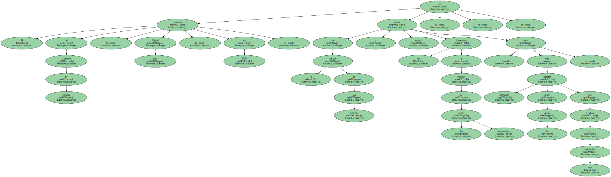
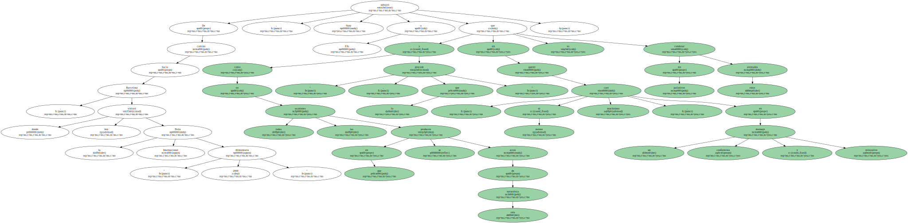
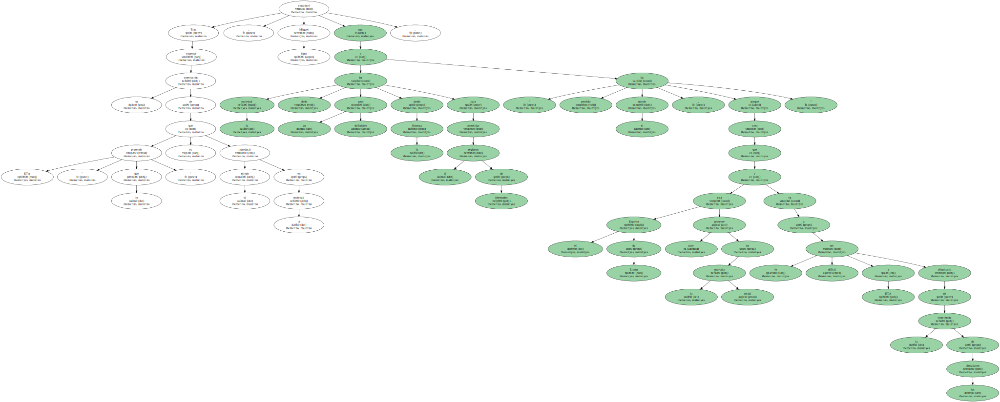
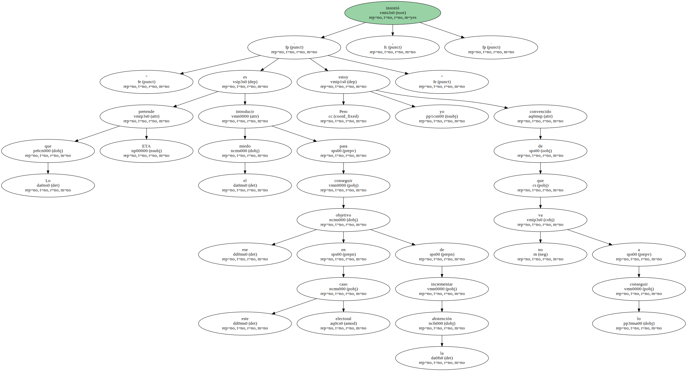
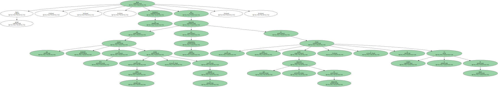
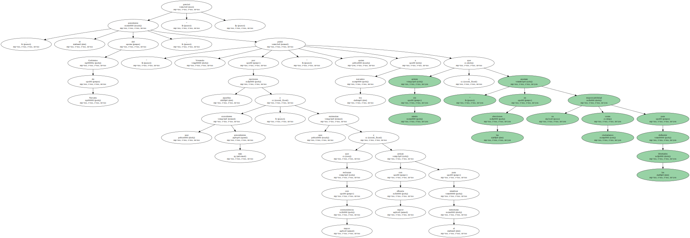

El presidente del Gobierno de Navarra , Miguel Sanz , de UPN , ha vuelto , tras el atentado de San Sebastián , a realizar un llamamiento al conjunto de los partidos democráticos " para que sigamos trabajando desde la unidad por erradicar a estos criminales ".
De camino hacia Barcelona , donde visitará hoy la Feria Internacional " Alimentaria 2000 " , Sanz subrayó a Efe que " como en todas las ocasiones en que se producen actos de esta naturaleza y sin querer caer , ni muchísimo menos , en un mensaje conformista y reiterativo , lo que procede es condenar sin paliativos estos atentados ".
A su juicio , atentados como el de San Sebastián " corroboran desgraciadamente que la estrategia y la espiral violenta y asesina de ETA es una amenaza que persiste en el conjunto de los ciudadanos , al margen de su condición y de la profesión que éstos ejerzan ".

A su juicio , atentados como el de San Sebastián " corroboran desgraciadamente que la estrategia y la espiral violenta y asesina de ETA es una amenaza que persiste en el conjunto de los ciudadanos , al margen de su condición y de la profesión que éstos ejerzan ".

" En este caso les ha tocado a una patrulla de la Guardia Civil , que ha podido tener incluso consecuencias para otros ciudadanos externos a este cuerpo " , agregó el presidente navarro , quien subrayó que , en esta ocasión , " afortunadamente " no se han registrado víctimas mortales.
Tras expresar su convicción de que ETA " lo que pretende es introducir el miedo en la sociedad " , Miguel Sanz consideró que " la sociedad ha dado un paso definitivo desde la firmeza para consolidar el régimen de libertades y ha perdido el miedo , porque creo que el Espíritu de Ermua está muy presente en la mayoría social y le va a ser difícil a ETA eliminarlo de la conciencia de los ciudadanos ".
" Lo que pretende ETA es introducir el miedo para conseguir ese objetivo en este caso electoral de incrementar la abstención . Pero yo estoy convencido de que no lo va a conseguir " , insistió.
Según agregó , " ante esta presión intolerable de ETA basada en el crimen y en el asesinato , los ciudadanos tienen que responder con mucha contundencia de la única forma que se puede responder en democracia , y es votando el 12 de marzo ".
" Votando por aquellas opciones que consideren más procedentes , y que entiendan que rechazan con mayor contundencia y actúan con mayor eficacia para erradicar el terrorismo " , precisó el presidente del Gobierno de Navarra , quien pidió a los navarros " que actúen sin miedo y asuman en las elecciones su responsabilidad como ciudadanos para defender las libertades ".